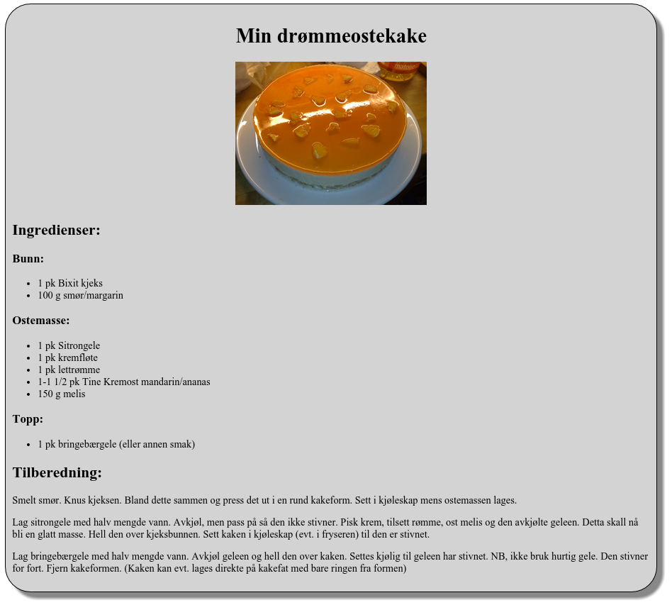

|
|
|
Før dere setter igang med oppgaver kan det være lurt å legge inn automagisk start av en html side i sublime-text editorn.
Hallo verden er en vanlig måte å teste ut ny teknologi på. I denne oppgaven skal du lage ditt første html-hallo-verden-program.
Figure 3: Hello world! Hentet fra flickr
Du skal lage siden index.html, som lagres i en egen mappe. Her skal
du bruke så mye av det du har lært fra første avsnittet. Tittelen på
siden skal være "Hallo verden!". Innholdet bestemmer du selv. Husk å
lage oppgaven i en egen mappe.
Lag filen index.html i din favoritteditor, og lagre i egen
mappe. Denne filen skal inneholde HTML-kode som lager siden vist under
når du åpner den i en nettleser.

Bilden i oppgaven: Orange_cheesecake.jpg
Oppgaven er lisensiert under en Creative Commons Navngivelse-DelPåSammeVilkår 4.0 Internasjonal lisens.
Slike oppgaver kan løses på mange måter. Vi steber etter enkel men lesbar kode.
Hint 1.
width til img taggen for å kontrollere størrelsen på bilden.
Hint 2.
<div> elementet for å ramme in reseptet og se på example:Lekmeddiv.
Hint 3.
style attributten til <div> for å sentrere tekst og bilde.Solution.
ostekake/index.html.
<!doctype html>
<html lang="nb">
<head>
<meta charset="UTF-8">
<title>Ostekake</title>
</head>
<body>
<div style="text-align: center;
width: 1000px;
background-color: LightGray;
border-color: black;
border-width: 1px;
border-style: solid;
border-radius: 40px;
padding: 10px;
box-shadow: 10px 10px 5px #888888;">
<h1>Min drømmeostekake</h1>
<img src="https://upload.wikimedia.org/wikipedia/commons/4/40/Orange_cheesecake.jpg"
width="30%">
<div style="text-align: left;">
<h2>Ingredienser:</h2>
<h3>Bunn:</h3>
<ul>
<li>1 pk Bixit kjeks</li>
<li>100 g smør/margarin</li>
</ul>
<h3>Ostemasse:</h3>
<ul>
<li>1 pk Sitrongele</li>
<li>1 pk kremfløte</li>
<li>1 pk lettrømme</li>
<li>1-1 1/2 pk Tine Kremost mandarin/ananas</li>
<li>150 g melis</li>
</ul>
<h3>Topp:</h3>
<ul>
<li>1 pk bringebærgele (eller annen smak)</li>
</ul>
<h2>Tilberedning:</h2>
<p>
Smelt smør. Knus kjeksen. Bland dette sammen og press det ut i en rund
kakeform. Sett i kjøleskap mens ostemassen lages.
</p>
<p>
Lag sitrongele med halv mengde vann. Avkjøl, men pass på så den ikke
stivner. Pisk krem, tilsett rømme, ost melis og den avkjølte geleen.
Detta skall nå bli en glatt masse. Hell den over kjeksbunnen. Sett
kaken i kjøleskap (evt. i fryseren) til den er stivnet.
</p>
<p>
Lag bringebærgele med halv mengde vann. Avkjøl geleen og hell den over
kaken. Settes kjølig til geleen har stivnet. NB, ikke bruk hurtig
gele. Den stivner for fort. Fjern kakeformen. (Kaken kan evt. lages
direkte på kakefat med bare ringen fra formen)
</p>
</div>
</div>
</body>
</html>
Det er skolestart, og du skal lage en timeplan i html. Lag timeplanen på bildet under. Bildet kan du hente fra commons.wikimedia.org. Husk å lagre oppgaven i egen mappe. Legg også bildet i en egen mappe med navn "bilder".

Solution.
timeplan/timeplan.html.
<!doctype html>
<html lang="nb">
<head>
<meta charset="UTF-8">
<title>Min timeplan</title>
</head>
<body>
<h1>
Min Timeplan
</h1>
<img src="bilder/skolesal.jpg" width="25%">
<p>
<ul>
<li>Kontaktinformasjonen finnes på skolens hjemmeside</li>
<li>Husk rådegivertjenesten hver onsdag i 4. time</li>
<li>Kantinen er åpen fra kl 08:30 - kl 14:00 hver dag</li>
</ul>
</p>
<table border="1" style="background-color: LightYellow;">
<tr>
<td><b>Time</b></td><td><b>Mandag</b></td>
<td><b>Tisdag</b></td><td><b>Onsdag</b></td>
<td><b>Torsdag</b></td><td><b>Fredag</b></td>
</tr>
<tr>
<td><b>1. time</b></td><td>Norsk</td>
<td>Norsk</td><td>Samfunnsfag</td>
<td>IT2</td><td>Fagdag</td>
</tr>
<tr>
<td><b>2. time</b></td><td>Norsk</td>
<td>Norsk</td><td>Samfunnsfag</td>
<td>IT2</td><td>Fagdag</td>
</tr>
<tr>
<td><b>3. time</b></td><td>Norsk</td>
<td>Kjemi</td><td>Kontaktlærer</td>
<td>Kjemi</td><td>Fagdag</td>
</tr>
<tr>
<td><b>4. time</b></td><td>Norsk</td>
<td>Kjemi</td><td>Fritimme</td>
<td>Kjemi</td><td>Fagdag</td>
</tr>
<tr>
<td><b>5. time</b></td><td>Historie</td>
<td>Kroppsøving</td><td>Matematikk</td>
<td>Fysikk</td><td>Fagdag</td>
</tr>
<tr>
<td><b>6. time</b></td><td>Historie</td>
<td>Kroppsøving</td><td>Matematikk</td>
<td>Fysikk</td><td>Fagdag</td>
</tr>
<tr>
<td><b>7. time</b></td><td>Matematikk</td>
<td>RLE</td><td>IT2</td>
<td>Fysikk</td><td>Fagdag</td>
</tr>
<tr>
<td><b>8. time</b></td><td>Matematikk</td>
<td>RLE</td><td>IT2</td>
<td>Fysikk</td><td>Fagdag</td>
</tr>
</table>
<p>
<ul>
<li>Kontakt lærer på studieforberedende
<ol>
<li>Arne Johansen</li>
<li>Anna Jansen</li>
</ol>
</li>
<li>Kontakt lærer på yrkesfag
<ol>
<li>Nina Nilsen</li>
<li>Ola Pedersen</li>
<li>Mette Lia</li>
</ol>
</li>
</ul>
</p>
</body>
</html>
|
|
|